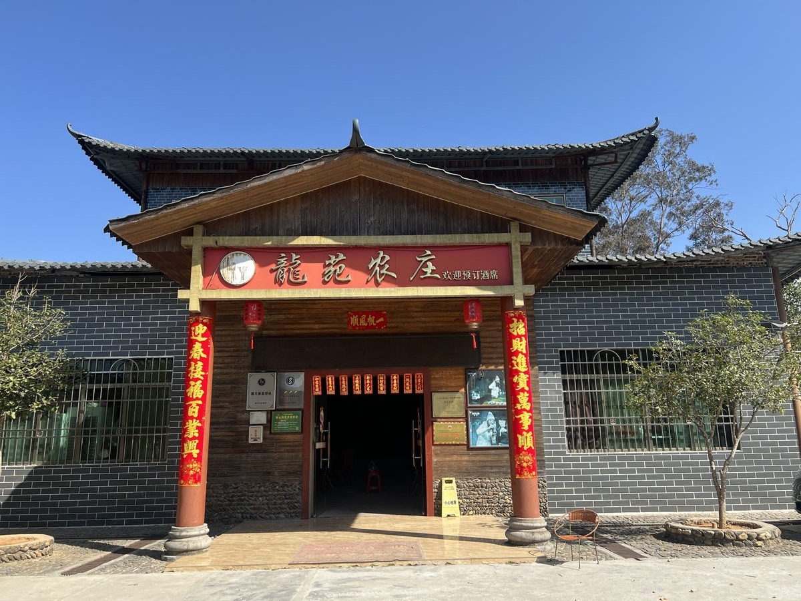
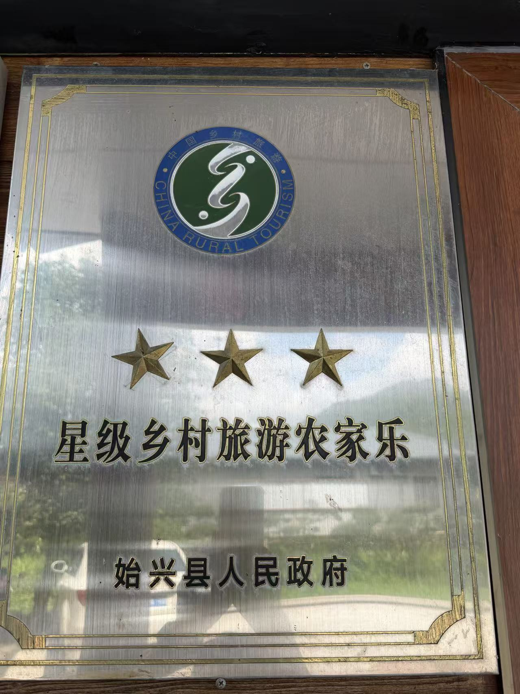
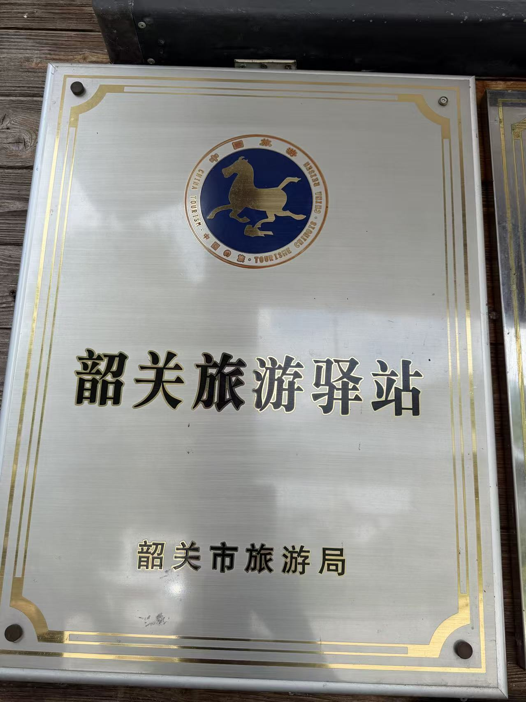
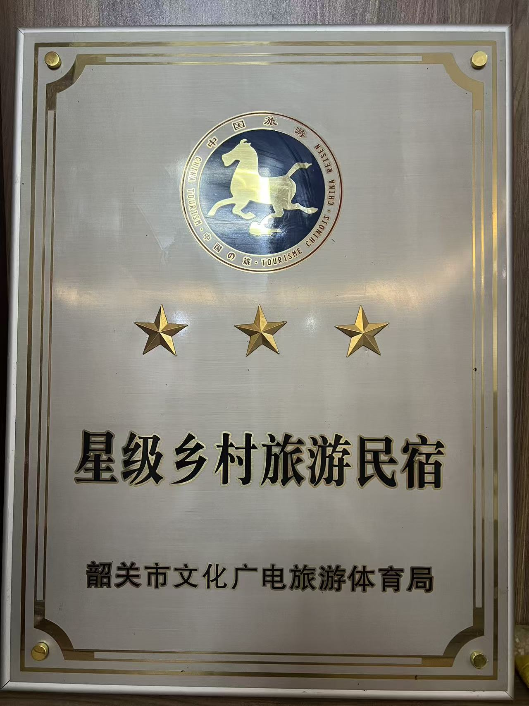
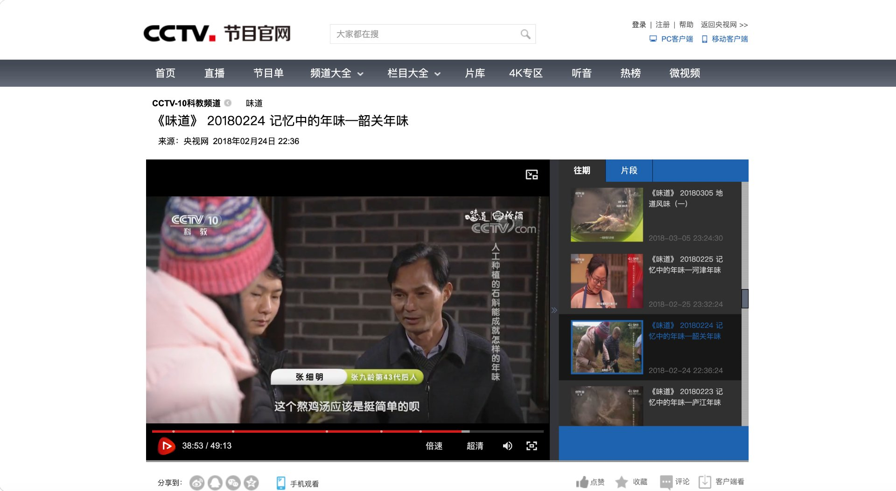
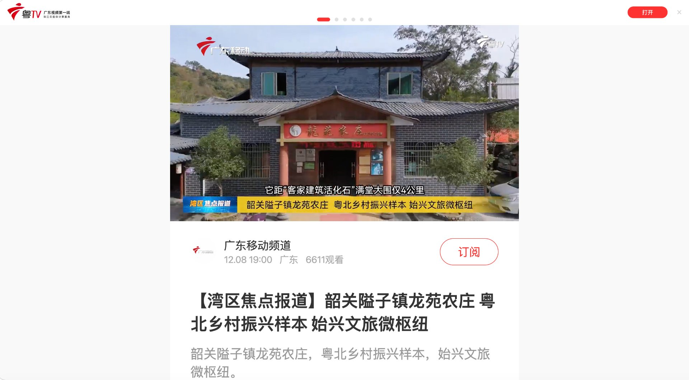
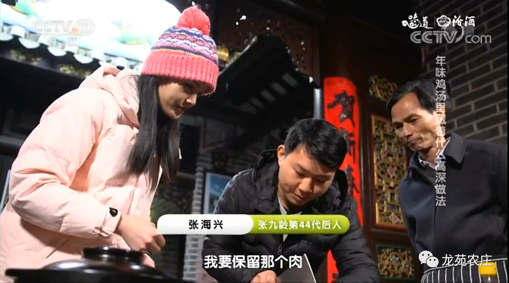

张九龄后裔 · 客家文化传承 · 16 年匠心经营

龙苑农庄坐落于韶关始兴县隘子镇，距唐代名相张九龄故居仅6公里。农庄主人张细明为张九龄第43代后裔，女主人官彩燕是客家满堂大围建造者官乾荣的后裔。两大家族汇聚于此，将千年客家文化融入一餐一宿之中。
2010年成立至今营业16年，龙苑农庄已成为隘子镇的文旅名片，先后被 2018年2月24日 央视《味道》栏目、2025年12月8日 广东卫视《湾区焦点报道》专题报道，荣获"粤北乡村振兴样本·始兴文旅微枢纽"称号。
了解更多 →千年客家文化，融入一餐一宿
张细明担任张九龄文化研究会副会长，农庄为研究会官方接待处，是粤北文旅融合的典范，距张九龄故居仅6公里。
文化传承官彩燕为满堂大围建造者官乾荣后裔，农庄建筑采用客家方围风格，古色古香，红灯笼点缀，节日氛围浓厚。
建筑特色官彩燕为非遗美食"米粿糍"传承人，致力于传承始兴非遗技艺，带动村民就业，形成"非遗+产业"的乡村振兴模式。
非遗传承政府认证 · 行业认可 · 30+间精品客房

经农业农村与文旅部门联合评审，龙苑农庄获评三星级乡村旅游农家乐，餐饮、住宿、安全、卫生全面达标。
颁证：始兴县人民政府
经韶关市旅游局评定，龙苑农庄入选韶关旅游驿站体系，承担粤北旅游集散、餐饮、休憩功能，是始兴隘子镇旅游服务的重要节点。
颁证：韶关市旅游局
龙苑农庄民宿（30+间精品客房）通过三星级乡村旅游民宿评定，客房、配套、服务、安全均达行业标准。
颁证：韶关市文化广电旅游体育局央视《味道》·广东卫视《湾区焦点报道》专题报导

2018年2月24日"记忆中的年味——韶关年味"专题
张细明、张海兴父子代表作：
"石斛煲鸡""炒宰相粉""手工肉丸"

2025年12月8日 专访
荣获"粤北乡村振兴样本·始兴文旅微枢纽"称号
张细明、官彩燕夫妇在改革开放初期即赴深圳经营饭店，在竞争激烈的餐饮市场打拼20年，积累了丰富的经营经验和精湛的烹饪技艺。2010年，回到家乡隘子镇，用手艺与匠心创办龙苑农庄。
其子张海兴秉承父业，曾在上海、杭州、合肥、深圳等地星级酒店学厨7年，将传统客家风味与现代烹饪技法融会贯通。
从选材到烹饪，从服务到环境，每一个细节都承载着两代人对客家美食的坚守与热爱。
